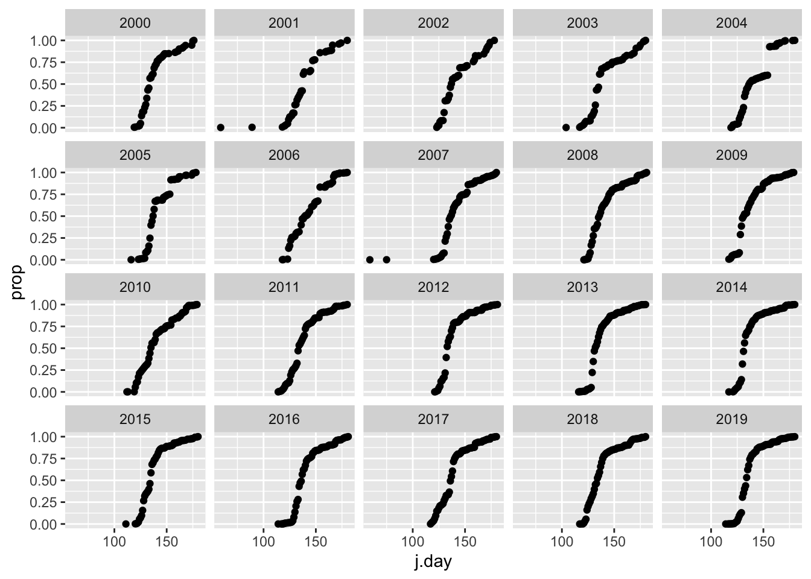

Module 9 Project
Introduction
Each northern hemisphere spring, many neotropical passerines undertake long-distance migrations from Central and South America to temperate latitudes to forage and breed. Many of these species fly non-stop over the Gulf of Mexico and arrived on land between Texas and Florida. These species are therefore described as trans-Gulf migrants (TGMs). The date when any individual migrant arrives on its breeding grounds has important fitness consequences and the evolution of this phenological event is likely the result of balancing important tradeoffs. For instance, arriving early increases the chances of finding a mate and breeding multiple times, however later arrival ensures higher food availability in these temperate and seasonal ecosystems (Smith and Moore 2005; Newton 2008).
In the context of a changing climate, failure of TGMs to shift arrival date at breeding areas in response to warmer spring temperatures may result in population declines (Both et al. 2006). If and how TGMs and other long-distance migrants shift their spring arrival in temperate North America in response to local temperature changes remains hotly debated (Smith and Moore 2005; Knudsen et al. 2011). In studying the effects of changes in local environmental parameters linked to climate change on migration phenology, scientists have traditionally relied on field, banding, or tracking studies (e.g., Smith and Moore 2005; Askeyev, Sparks, and Askeyev 2009). These studies are often limited in temporal scope and in scale due to the few experts who are trained in this work
In recent decades, there has been a marked increase in public interest in species conservation. Coupled with this is the development of several online programs in which amateur birders can submit bird observations. The Cornell Laboratory of Ornithology and the National Audubon Society have established the most popular and far-reaching of these programs: eBird. Since its launch in 2002, eBird has collected and compiled well over 100 million bird observations from many thousand contributors. In addition to new checklists, users have also entered historical observations, so that eBird includes data prior to 2002 as well. This great cache of data has enormous implications for the study of bird ecology. Although it is a relatively new platform and its temporal reach is limited, the taxonomic and geographic breadth of eBird data will no doubt make it an important tool in studying avian biology.
The goal of this project is to use eBird and meteorological data to study the effect of local weather conditions on the arrival time of TGMs in Massachusetts. To do this, we’ll download eBird’s species occurrence data from the Global Biodiversity Information Facility (GBIF) using rgif, an R package that permits access to GBIF’s application programming interface (API). We’ll also compile weather using another R package, rnoa which contains functions that interact with NOAA’s National Climatic Data Center’s API.
Methods
Firstly, you should decide which species to study. We’ll limit this to any 5 in this list of TGMs that make their way to MA each spring. Once you have 5 species chosen, download the occurrence data for these species using the occ_data() function from rgbif.
eBrid does indeed have its own API and R package (two actually, rebird and auk). However, I find them rather cumbersome and hard to work with. auk is especially so in that it requires downloading and filtering through the entire eBird data set when one only wants to work with just a few species. The developers suggest workarounds, however, one may still spend many hours just loading the initial data. Fortunately, eBird sends its data to GBIF and, thus, rgbif, which allows species-level queries to the GBIF API, is much easier to work with. Same data, fewer headaches.
Querying GBIF’s API
Before we go too much further, let’s have a look at what rgbif can do. Its most promising function for our work is occ_data() which searches GBIF occurrences relatively quickly. Let’s first load the packages we’ll need now and later (make sure they’re installed!). Then, let’s query GBIF for the common raven, a most spectacular bird, in the state of Maine (a most spectacular place) and plot the occurrence lat/lon on a map of that state using ggmap and cowplot functions. Here we restrict the occ_data() search by specifying the scientific name (Corvus corax), the state/province to Maine, the year as 2018, and a limit of 200 records.
library(rgbif)
library(tidyverse)
library(MuMIn)
library(rnoaa)
library(data.table)
library(ggmap)
library(usmap)
library(magick)#for examples
library(cowplot)#for examples
library(lme4) #for linear mixed effect models
library(car) #for LME anova testing
library(data.table) #for frollmean function (and others)
raven <- occ_data(scientificName = "Corvus corax", stateProvince="Maine", limit=200,year=2018)
#get the state of ME from ggmaps map data
ME<- map_data('state', 'maine')
raven.p <- ggplot(ME, aes(long,lat,group=subregion) )+
geom_polygon(colour = "gray",fill="gray90")+geom_point(data=raven[[2]],aes(x=decimalLongitude,y=decimalLatitude,size=individualCount),alpha=0.3,inherit.aes = F)+ coord_quickmap()+theme_void()
#and add image to the map with cowplot
raven.p2 <- ggdraw() +
draw_image("https://www.allaboutbirds.org/guide/assets/photo/63739491-480px.jpg",scale = 0.3,halign=0,valign=1) +
draw_plot(raven.p)
print(raven.p2)Fig. 1. Records for common raven in Maine, 2018.
Notice how occ_data() returns records as a list of different data types. See . . .
## [1] "meta" "data"## $meta
## $meta$offset
## [1] 0
##
## $meta$limit
## [1] 200
##
## $meta$endOfRecords
## [1] FALSE
##
## $meta$count
## [1] 7636
##
##
## $data
## # A tibble: 6 x 74
## key scientificName decimalLatitude decimalLongitude issues datasetKey
## <chr> <chr> <dbl> <dbl> <chr> <chr>
## 1 1831… Corvus corax … 44.4 -68.1 "cdro… 50c9509d-…
## 2 2102… Corvus corax … 44.6 -69.2 "" 4fa7b334-…
## 3 2102… Corvus corax … 44.4 -68.0 "" 4fa7b334-…
## 4 2102… Corvus corax … 44.3 -68.0 "" 4fa7b334-…
## 5 2102… Corvus corax … 44.4 -68.4 "" 4fa7b334-…
## 6 2103… Corvus corax … 44.6 -69.2 "" 4fa7b334-…
## # … with 68 more variables: publishingOrgKey <chr>, installationKey <chr>,
## # publishingCountry <chr>, protocol <chr>, lastCrawled <chr>,
## # lastParsed <chr>, crawlId <int>, basisOfRecord <chr>,
## # occurrenceStatus <chr>, taxonKey <int>, kingdomKey <int>, phylumKey <int>,
## # classKey <int>, orderKey <int>, familyKey <int>, genusKey <int>,
## # speciesKey <int>, acceptedTaxonKey <int>, acceptedScientificName <chr>,
## # kingdom <chr>, phylum <chr>, order <chr>, family <chr>, genus <chr>,
## # species <chr>, genericName <chr>, specificEpithet <chr>, taxonRank <chr>,
## # taxonomicStatus <chr>, dateIdentified <chr>,
## # coordinateUncertaintyInMeters <dbl>, stateProvince <chr>, year <int>,
## # month <int>, day <int>, eventDate <chr>, modified <chr>,
## # lastInterpreted <chr>, references <chr>, license <chr>,
## # geodeticDatum <chr>, class <chr>, countryCode <chr>, country <chr>,
## # rightsHolder <chr>, identifier <chr>, `http://unknown.org/nick` <chr>,
## # verbatimEventDate <chr>, datasetName <chr>, verbatimLocality <chr>,
## # gbifID <chr>, collectionCode <chr>, occurrenceID <chr>, taxonID <chr>,
## # recordedBy <chr>, catalogNumber <chr>,
## # `http://unknown.org/occurrenceDetails` <chr>, institutionCode <chr>,
## # rights <chr>, eventTime <chr>, occurrenceRemarks <chr>, identifiedBy <chr>,
## # identificationID <chr>, individualCount <int>, vernacularName <chr>,
## # locality <chr>, county <chr>, name <chr>This includes the meta data ($meta), data about the data and the data themselves, ($data), a tibble. The $data tibble includes the information we need for this project, including date, lat, long, count, etc. Thus, to access the lat/lon data in our records, we refer to the second element in the list, that is raven[[2]].
Before we get a GBIF search for TGMs started, I suggest first storing your species names in a vector (so please choose them and store them). Say, for instance, you chose great-crested flycatcher, Baltimore oriole, rose-breasted grossbeak, yellow-billed cuckoo, and black-throated blue warbler. We also want to restrict the search to spring arrival time in years of interest (i.e., those with decent eBird data . . . >1990 or so). Let’s store those values, too.
species <- c("Myiarchus crinitus","Icterus galbula","Pheucticus ludovicianus","Coccyzus americanus","Setophaga caerulescens")
y <- paste0("1990",",","2019")
m <- paste0("3",",","6")Notice how the year and month vectors, y and m, respectively, are each a character string with two values separated by a comma. This is how we’ll constrain the search with occ_data(). Have a look at ?occ_data to familiarize yourself with the function’s parameters and the values they take.
To commence the GBIF queries for your 5 species, I suggest using a familiar convention: a for loop that passes data to an empty list. That is, establish that empty list and run the species through occ_data(), storing values in the list as the for loop progresses. Here are some important pieces.
Constrain the occ_data() search by:
- each of your species in your loop (i.e.,
scientificName=iifiis yourforvariable) - occurrences within our year and month range (
year=yandmonth=m) - occurrences in United States and the state Massachusetts (
country="US"andstateProvince="Massachusetts") - occurrence record should be based on a human observation, that is, someone saw this in the wild (i.e., an eBird record,
basisOfRecord = "HUMAN_OBSERVATION").
This will be a rather labored search in that it might take 20 minutes to run through all five species, depending on the number of records. But, this is nothing like the hours one would spend working with auk. So run this and grab a sandwich and refresh your twitter feed. After that, we should have a many thousands of MA eBird records loaded to the list.
To get get you started, here’s what could be done . . .
dat.l <-list()
for(s in species){
## setting the limit=0 returns no records but can give you the number of observations if you access the meta data
n.obs <- occ_data(scientificName = s,year=y,month=m,limit=0,country="US",basisOfRecord = "HUMAN_OBSERVATION",stateProvince="Massachusetts")$meta$count
print(n.obs)
dat.l[[paste0(s)]] <- occ_data(scientificName = s,year=y,month=m,
limit=n.obs,country="US",
basisOfRecord = "HUMAN_OBSERVATION",
stateProvince="Massachusetts")[[2]]
}
dat <- rbindlist(dat.l,fill=T)
head(dat)Note that we store the number of observations for each species, ripped from the meta data using occ_data() with limit=0. This won’t return records, but will return the meta data. We can then pass this number to limit in the subsequent use of occ_data to bypass the limit of 500, which is the default.
This search will take a little while and we certainly don’t want to repeat it any more than we have to. If the code that runs this lengthy search is part of your markdown (and it probably should be!), simply set the chunk options to cache=TRUE. So set, when this chunk runs successfully, the results are stored (i.e., cached) so they can be accessed without running the code again. The cache will be used in place of the chunk until the code within it changes. Give it a shot.
After a large operation like this, it’s best to save the data. Many in the R world prefer that large data objects be stored as serialized files. The saveRDS() function is exactly what we need for this. The following will save data as an R serialized file with the name “mass.bird.data.RDS”.
Now, if your script or markdown should be interrupted (e.g., a crash, freeze, etc.), you can access your data with readRDS():
With a sense of how the bird data will be downloaded, let’s see what sort of numbers we’ll be dealing with. These are year-by-year totals from occ_data() searches for the 5 species above . . .
dat%>%
group_by(year,species)%>%
summarise(count=sum(individualCount,na.rm = T))%>%
ggplot(aes(x=year,y=count,col=species))+geom_point()## `summarise()` regrouping output by 'year' (override with `.groups` argument)It looks like there’s not much data before 2000 for all species. We’ll keep this in mind as we move forward. Now let’s move on to compiling weather data.
Querying NOAA’s NCDC API
First off, let’s think about what weather parameters and at which locations and time frames we’ll compile data from. We’re studying TGMs so we probably want to look at weather along the migration route. That is, weather in Massachusetts may not be the best predictor of migration timing because migrants arriving there have to fly through local weather conditions along the way.
Because nocturnal long-distance migrators fly about 200 km\(^{-d}\) (Hall-Karlsson and Fransson 2008), we can estimate that a bird that was 1000 km away from Massachusetts 5 days before arrival and 2000 km away 10 days before arrive. With this in mind, we can establish an assumed migration path from the Gulf of Mexico and sample weather from locations that are close to these distances from Massachusetts. If one draws a line from Mobile, AL on the Gulf Coast (about 2000 km from MA) to Boston, MA, Charlotte, NC sits along that line and half way along an assumed flight path (1000 km from MA). Thus, these locations represent logical sampling locations for our weather data.
NOAA’s NCDC identifies weather stations by unique ID codes. The following vector, sts, represents the codes for stations in Mobile, Charlotte, and Boston that have relatively complete data sets for wind and temperature over our time frame (>1990 or so).
Before we start using rnoaa to access NOAA’s NCDC API, we have to establish a key, a token of sorts that identifies the user and establishes a connection to the NCDC servers. Head on over to this page on NOAA’s NCDC site to retrieve a token. It will require entering an email address, to which the token will be sent. Copy the token (a string of random letters and numbers) and paste it into the following where “token” is indicated.
The R function options() sets global parameter values for your R session. With noaakey="token", you’re telling R to pass this token string to any function that asks for noaakey, that is, all the rnoaa query functions.
sts <- c(
"GHCND:USW00013894", #Mobible, AL 2k away about 10 days away @200 km/day
"GHCND:USW00013881", #Charlotte, NC 1000 km away about 6 days away @200 km/day
"GHCND:USW00014739" #Boston
)Now that we have the station codes identified and a token key established, let’s query the the NCDC API with ncdc_stations() to retrieve their exact location. Let’s first see what this function returns using our Boston station ID.
## $meta
## NULL
##
## $data
## elevation mindate maxdate latitude name datacoverage
## 1 3.7 1936-01-01 2020-11-22 42.3606 BOSTON, MA US 1
## id elevationUnit longitude
## 1 GHCND:USW00014739 METERS -71.0097
##
## attr(,"class")
## [1] "ncdc_stations"Notice that the data about this station is stored in the $data table returned by ncdc_stations() This means we can run all three of out stations through this function and combine the rows to give us a table with all the station data. We’ll use these data to map the station locations to visualize our weather sampling locations. Let’s do that using lapply() and a few other tricks to prepare the station data for mapping and use with other ncdc functions.
sta.d <- bind_rows( #bind the rows
lapply(sts,function(x) ncdc_stations(stationid = x)$data ) #use lapply to run through stations
)%>%
left_join(usmap_transform(.[,c("longitude","latitude")]))%>% #join transformation of lat/long for projection with usmap
mutate(name=str_sub(name, -5,-4))%>%#simplify the name column, grab just the state
mutate(migr.day=c(10,5,0))%>% #so we can look at wind speed 0, 5 or 10 days before arrive in boston
separate(id,into = c("station.type","id"))%>%#need to cut station type out from station id number
print()## elevation mindate maxdate latitude name datacoverage station.type
## 1 65.5 1948-01-01 2020-11-21 30.68833 AL 1 GHCND
## 2 221.9 1939-01-01 2020-11-21 35.22360 NC 1 GHCND
## 3 3.7 1936-01-01 2020-11-21 42.36060 MA 1 GHCND
## id elevationUnit longitude longitude.1 latitude.1 migr.day
## 1 USW00013894 METERS -88.24556 1128546 -1510270.4 10
## 2 USW00013881 METERS -80.95520 1718207 -890715.0 5
## 3 USW00014739 METERS -71.00970 2320539 125820.5 0First, we surround lapply() with dplyr’s bind_rows() so that the results of the lapply() operation will be collapsed into a single table. Within lapply(), we have that function work on our stations vector, sts, using a short customized function that queries NCDC station data with ncdc_stations() and returns the data with $data.
Next, we join transformed lat/lon data from this table using usmap_tranform() from the usmap package. We’ll use this package to map the eastern US with our sampling locations and this package uses a funky lat/long projection We then mutate the name column in the table to contain just the state using str_sub() from the stringr package loaded with tidyverse. With str_sub(name, -5,-4), we’re mutating the name to contain the characters that are the 5th through 4th from the end of the string, that is, the state. Then, we add a column that reflects the assumed migration day away from Boston (10, 5, and 0 for AL, NC, and MA, respectively). This will be important later. Lastly, we use dplyr’s separate() function to split the station ID column into two separate columns, station.type and id, essentially replacing the id column with the station code minus the prefix that represents station type. We’ll need station ID without this prefix for later ncdc operations.
Now let’s plot these locations on a map of the eastern US. We’ll use usmap’s plot_usmap() function for this as it plays nice with ggplot. plot_usmap() allows one to include regions of the US. For our purposes, we need the northeast, south, and east north central regions, so we pass c(.northeast_region,.south_region,.east_north_central) to the include parameter. On top of this map, we add points using our transform lat/long data in the sta.d tibble. Let’s make the points big and color them by name (i.e., state). Then, let’s add a label using the same color scheme and nudge the position of the lable closer to the points. Lastly, we removed the legend because, duh, the points are labeled
plot_usmap(
include = c(.northeast_region,.south_region,.east_north_central)
)+geom_point(data=sta.d,aes(x=longitude.1,y=latitude.1,col=name),size=5)+geom_label(data=sta.d,aes(x=longitude.1,y=latitude.1,col=name,label=name),size=5,nudge_x = 1e6*0.25)+theme(legend.position = "none")
Fig. 2. Weather sampling locations for this project.
Voila! Looks like our sampling locations align with a decent NE migration path. Now let’s get the weather data from these stations during the spring of the years we have decent eBird data for, since 2000 when we see an uptick in eBird data. For this we’ll use meteo_pull_monitors() which returns a tidy tibble. Notice we pass the sta.d$id column to this function and it contains the station ID without the prefix.
## using cached file: /Users/biology/Library/Caches/R/noaa_ghcnd/USW00013894.dly## date created (size, mb): 2020-11-19 12:53:52 (6.951)## file min/max dates: 1948-01-01 / 2020-11-30## using cached file: /Users/biology/Library/Caches/R/noaa_ghcnd/USW00013881.dly## date created (size, mb): 2020-11-19 12:33:42 (7.552)## file min/max dates: 1939-07-01 / 2020-11-30## using cached file: /Users/biology/Library/Caches/R/noaa_ghcnd/USW00014739.dly## date created (size, mb): 2020-11-17 16:40:05 (8.386)## file min/max dates: 1936-01-01 / 2020-11-30## # A tibble: 6 x 39
## id date awnd fmtm pgtm prcp snow snwd tavg tmax tmin tsun
## <chr> <date> <int> <int> <int> <dbl> <dbl> <dbl> <dbl> <dbl> <dbl> <int>
## 1 USW0… 2000-01-01 35 1202 1341 0 0 0 178 233 122 NA
## 2 USW0… 2000-01-02 45 1200 1157 0 0 0 189 250 128 NA
## 3 USW0… 2000-01-03 68 1140 1418 0 0 0 222 239 206 NA
## 4 USW0… 2000-01-04 50 40 1334 94 0 0 133 217 44 NA
## 5 USW0… 2000-01-05 24 104 138 0 0 0 67 133 -6 NA
## 6 USW0… 2000-01-06 13 1006 1244 0 0 0 83 161 0 NA
## # … with 27 more variables: wdf2 <int>, wdf5 <int>, wesd <int>, wsf2 <int>,
## # wsf5 <int>, wt01 <int>, wt02 <int>, wt03 <int>, wt04 <int>, wt05 <int>,
## # wt06 <int>, wt07 <int>, wt08 <int>, wt09 <int>, wt11 <int>, wt13 <int>,
## # wt14 <int>, wt15 <int>, wt16 <int>, wt17 <int>, wt18 <int>, wt21 <int>,
## # wt22 <int>, wv03 <int>, psun <int>, wt19 <int>, wt10 <int>Also notice that this produces a series of messages that indicate you’ve queried the NCDC API and downloaded cached files to a local location.
We’ll be looking at fourish weather parameters, the minimum and maximum temperature in tenths of \(^o\)C (tmin), average wind velocity in m\(^{-s}\) (awnd), and direction of fastest 2-minute wind (wdf2). With the weather and eBird data in place, we can move on to preparing the data for analysis and the analysis itself.
Data Analysis
Preparing eBird Data
For our analysis, we’ll compute arrival time for each species by finding the day that corresponds to when 25% of all the individuals have arrived in a given year. This means that we’ll have to find the total number of individuals that arrived over our spring time frame for each year for each species. Once we have this in place, we can model the arrival as a process that resembles are logistic curve. Logistic curves are used to describe many processes in biology that take on an S-shaped response: population and tumor growth, infectious pathogen spread in a pandemic (!), and enzyme substrate binding (e.g., Hb-O\(_2\) association).
So let’s explore an example of the arrival as modeled logistically of one species, "Myiarchus crinitus, in previously a developed data set. For this and all our species we’ll use Julian day as the time variable, simply the day of the year. Let’s compute that and then . . . .
mc<- dat%>%
filter(species=="Setophaga caerulescens")%>%
group_by(year)%>%
mutate(date=as.Date(paste0(year,"-",month,"-",day)),
j.day=julian(date,origin=as.Date(paste0(unique(year),"-01-01")))
)%>%
group_by(species,year,j.day,date)%>%
summarise(day.tot=sum(individualCount,na.rm=T))%>%
group_by(species,year)%>%
mutate(prop=cumsum(day.tot/sum(day.tot,na.rm = T)))%>%
filter(year>1999)## `summarise()` regrouping output by 'species', 'year', 'j.day' (override with `.groups` argument)
So as we can see, arrival of these migrants follows a logistic process when we consider the proportion of the population that has arrived. Now we can model this with a logistic model in R. We’ll add predictions based on nls() and SSlogis() functions from the stats package. This is similar to something we did in the project for Module 3. A logistic model requires a few parameter: the asymptote (Asym), the x value (j.day in our case) at the inflection point of the curve (xmid), and the scale (scale). We’ll use SSlogis(), a self-starting model that creates initial estimates of the parameters. After modeling the logistic curves, let’s add the date back to the tibble (it’ll be important later) and then plot the predictions along with the original data.
mc.pred <- mc%>%
group_by(year)%>%
summarize(
pred=predict(nls(prop~SSlogis(j.day,Asym, xmid, scal)),newdata=data.frame(j.day=min(j.day):max(j.day))),#predict the logistic curve for each species
j.day=min(j.day):max(j.day),
)%>%
left_join(mc%>%select(j.day,date)) ## add date back to tibble## `summarise()` regrouping output by 'year' (override with `.groups` argument)## Adding missing grouping variables: `species`, `year`## Joining, by = c("year", "j.day")mc%>%
ggplot(aes(j.day,prop))+geom_point(aes=0.3)+geom_line(data=mc.pred,aes(x=j.day,y=pred),col="blue",size=2)+facet_wrap(year~.)## Warning: Ignoring unknown parameters: aes
Seems our logistic models for arrival of this species estimate the arrival function really well. Now we’ll find the Julian day each year that is closest to 0.25 of the population arriving. Let’s also plot how this arrival day varies with year.
mc.arrive.date <-mc.pred%>%
group_by(year)%>%
filter(j.day==j.day[which.min(abs(pred-0.25))])
mc.arrive.date%>%
ggplot(aes(year,j.day))+geom_point()
Pretty variable, so maybe weather can explain this. This is but just one of five species. We’ll come back to running a similar analysis for all five at once.
Preparing weather Data
Now let’s prepare our weather data. This first operation is rather involved, so we’ll work through it step by step. First, we’ll have to add columns for year and Julian day so that we can later join the weather and eBird data. We’ll strip the year from the date column using str_sub() and then group by year to compute the Julian day, just as we did for the eBird data. We’ll also make sure that date is stored as date-class data with as.Date().
Notice that along with computing Julian day with a mutate() operation, we also add columns for another date (date2) and new weather data columns, wdir.rad and wvec. We need to repeat the date column for a join later that allows the dates between the eBird and weather data sets to be offset by 0, 5, or 10 days according to the when we expected the birds to move through AL and NC.
The wdir.rad column computes the wind direction in radians based on wdf2, the wind direction for two minutes. For this, we want to scale the direction to 180\(^o\), so we take the absolute of the difference from 180 and subtract that value from 180. Then we multiply this value by \(\pi/180\) to get radians. Why are we doing this? See the note below.
With this same mutate function, we’ll compute the wind vector by finding the \(cos\) of the angle (in radians), multiplying it by wind velocity (awnd), and finally multiplying this value by -1. We flip the sign of the vector because wind is recorded as out of a direction in degrees. See the note below.
After this, we’ll select the weather columns we want to work with, and then join the station tibble to this weather tibble. This will add the migration timing data, that is, the migr.day column that specifies how far back in time to look at weather in AL and NC. Notice, using this value in another mutate, we change j.day to reflect this shift. That is, j.day for AL and NC weather will be 10 and 5 days behind the original j.day (the Julian day of bird arrival, too.).
weather.d <- weather.d%>%
dplyr::mutate(year=as.integer(str_sub(date,1,4)), #add year
date=as.Date(date))%>%
group_by(year)%>% #group by year so we can compute julian day
dplyr::mutate(j.day=julian(date,origin=as.Date(paste0(unique(year),"-01-01"))), #add julian day
date2=date,
wdir.rad=(180-abs(wdf2-180))*pi/180, #radians so we can use a trig function to compute wind vector, scale degrees first to 180 scale to 2x pi and subtract from 180 (wind comes out of a direction)
wvec=cos(wdir.rad)*-1*awnd # we want a negative value for positive value for 2x pi
)%>% #store day in new column
select(id,year,date2,j.day,tmin,tmax,wvec)%>% #select the rows we need
left_join(sta.d%>%select(id,name,migr.day))%>% #add the station id info (ie. name)
mutate(j.day=j.day+migr.day)#make j.day ahead of BOS according to the migration days away so we can join weather along path## Joining, by = "id"So why scale the wind direction to 180\(^o\)? Because we care about the direction relative to north only and we’re going to compute a vector—this is what will matter. Have a look at these four wind directions in the table below. Two winds coming out of the north at 10 and 350\(^o\) or south at 160 and 200\(^o\) have the same difference from 0\(^o\) or exactly north (Fig. 3:A). When transformed to a 0-180\(^o\) scale and into radians, you can see from the table the values are the same within each group. Now, when multiplied by a velocity, we’ll get a vector relative to north as well. In this case, because wind direction is reported as coming from a direction in degrees (rather than toward), we’ll multiply the vector by -1 to establish a vector that, if negative, represents a head wind and, if positive, represents a tailwind (Fig. 3:B).
| n | deg | deg.corr | deg.rad | velocity | wvec |
|---|---|---|---|---|---|
| 1 | 10 | 10 | 0.1745329 | 10 | -9.848078 |
| 2 | 350 | 10 | 0.1745329 | 20 | -19.696155 |
| 3 | 160 | 160 | 2.7925268 | 30 | 28.190779 |
| 4 | 200 | 160 | 2.7925268 | 40 | 37.587705 |

Now, with the variables we want (arrival day on the bird side, tmin, tmax, and wvec on the weather side), we’re ready to join eBird and weather data for analysis. To get you started, let’s join the the arrival data for Myiarchus crinitis with our weather data. To this tibble, we’ll also join the date column from the original bird data so we can see if the weather data is the right number of days behind the bird arrive date.
## Joining, by = c("year", "j.day")## Adding missing grouping variables: `species`## Joining, by = c("year", "j.day", "species", "date")## # A tibble: 6 x 12
## # Groups: year [2]
## year pred j.day species date id date2 tmin tmax wvec
## <int> <dbl> <dbl> <chr> <date> <chr> <date> <dbl> <dbl> <dbl>
## 1 2000 0.240 129 Setoph… 2000-05-09 USW0… 2000-04-29 89 272 1.79e+ 1
## 2 2000 0.240 129 Setoph… 2000-05-09 USW0… 2000-05-04 117 250 2.10e+ 1
## 3 2000 0.240 129 Setoph… 2000-05-09 USW0… 2000-05-09 83 183 -2.45e+ 1
## 4 2001 0.260 131 Setoph… 2001-05-12 USW0… 2001-05-02 139 278 2.07e+ 1
## 5 2001 0.260 131 Setoph… 2001-05-12 USW0… 2001-05-07 122 222 -1.30e+ 1
## 6 2001 0.260 131 Setoph… 2001-05-12 USW0… 2001-05-12 167 311 -3.12e-15
## # … with 2 more variables: name <chr>, migr.day <dbl>Sure enough, it is: date2 from the weather data is 10 and 5 days behind for AL and NC locations, respectively. Here we have the weather along the migration route with each of our stations and their data identified by name. But, how are we to analyze the data? Let’s think about the question (Does weather along the migration route predict arrival time?). Do we want just one day of weather at each location to predict arrival time (which the table above gives)? Let’s dive deeper into the weather data and compute the mean over two week (14 days) before a bird gets to each location. That is, at 200 km\(^d\), the table above assumes that birds don’t stop. And, they certainly do to eat and rest (Moore and Kerlinger 1987).
So let’s assume that 5 and 10 days is the earliest they would arrive at these weather locations, but it could be two weeks earlier. If that’s the case, let’s calculate the mean of our weather variables over that time period. For this, we’ll use a group and mutate using dplyr and the frollmean() function from data.table package. frollmean() computes a rolling mean across the rows of a table, perfect for our application. We’ll use it to compute the rolling mean for our weather variables for two weeks preceding each Julian day. then join this weekly data tibble to our arrival data for subsequent analysis. When we use left_join(), only the Julian days in the weekly average tibble matching those in the arrival data will be kept.
weather.wk <-weather.d %>%
group_by(year,name) %>%
mutate(wk.tmin = frollmean(tmin, n=14,align="right"),
wk.tmax = frollmean(tmax, n=14,align="right"),
wk.wvec = frollmean(wvec, n=14,align="right")
)%>%
select(j.day,date2,name,wk.tmin,wk.tmax,wk.wvec)## Adding missing grouping variables: `year`## Joining, by = c("year", "j.day")## # A tibble: 6 x 10
## # Groups: year [2]
## year pred j.day species date date2 name wk.tmin wk.tmax wk.wvec
## <int> <dbl> <dbl> <chr> <date> <date> <chr> <dbl> <dbl> <dbl>
## 1 2000 0.240 129 Setopha… 2000-05-09 2000-04-29 AL 119 267. -0.141
## 2 2000 0.240 129 Setopha… 2000-05-09 2000-05-04 NC 80.9 213. -4.96
## 3 2000 0.240 129 Setopha… 2000-05-09 2000-05-09 MA 73.1 181. 6.16
## 4 2001 0.260 131 Setopha… 2001-05-12 2001-05-02 AL 127. 265. 9.50
## 5 2001 0.260 131 Setopha… 2001-05-12 2001-05-07 NC 105. 251. 1.49
## 6 2001 0.260 131 Setopha… 2001-05-12 2001-05-12 MA 108. 244. 0.662Notice that frollmean() needs n specified, the number of values in adjacent rows (actually, n-1 rows) to compute the mean. We’ll also specify that the function look to the right when computing the mean, that is, each individual row and the preceding 13 rows in this case. Lastly, we chopped down the weekly average tibble to relevant columns before joining it to the arrival data.
With two joined tibbles each containing eBird and weather data, we’re finally ready for some analysis.
Linear Mixed-effect Modeling
To evaluate the effect of weather parameters on arrival time, one could undertake analysis using simple linear models. But, we have a rather complicated data set, including parameters (i.e., covariates) we see as important and explanatory that may contribute to a slope and intercept of the model and others that may be the reason that some groups within the data set have different slopes and intercepts. The variables that contribute to the slope and intercept are termed fixed effects, while those that contribute to distinct slopes and intercepts are termed random effects, and thus an analysis that accounts for both fixed and random effects is called a mixed effect model. In our case, we are interested in how the fixed effects of temperature and wind vector explains arrival and are OK with the fact that the location of these weather variables (a random effect) may contribute differently to the relationship. In subsequent analysis, you’ll also consider species as a random effect, allowing the response of arrival time may vary according to species.
Undertaking linear mixed-effect analysis in R is rather straightforward using the lme4 package, specifically the lme() function. Any formula for lme() is similar to other model choices in R, except that we must specify a random effect. This takes the form of +(1|variable) or +(y|variable) where variable is a random effect and y is the response. The first of these constructions stipulates that the slope may vary according to the random effect, while the second stipulates that the slope and intercept may vary according to the random effect. With this in mind, let’s kick the tires on linear mixed-effects models using lme() with our two data tibbles, one with a single weather-day sample and another with a two week-average of the weather.
#weather at 0, 5, and 10 days away from arrival
mc.lmer <- lmer(j.day~tmin*tmax*wvec+(1|name),mc.arr.weath,na.action = "na.fail")## Warning: Some predictor variables are on very different scales: consider
## rescaling## boundary (singular) fit: see ?isSingular## Analysis of Deviance Table (Type II Wald chisquare tests)
##
## Response: j.day
## Chisq Df Pr(>Chisq)
## tmin 0.5729 1 0.44909
## tmax 0.0290 1 0.86468
## wvec 2.2213 1 0.13612
## tmin:tmax 3.7878 1 0.05163 .
## tmin:wvec 0.1495 1 0.69898
## tmax:wvec 0.0038 1 0.95054
## tmin:tmax:wvec 0.3171 1 0.57334
## ---
## Signif. codes: 0 '***' 0.001 '**' 0.01 '*' 0.05 '.' 0.1 ' ' 1#0Mean two week weather preceding arrival
mc.lmer2 <- lmer(j.day~wk.tmin*wk.tmax*wk.wvec+(1|name),mc.arr.weath2,na.action = "na.fail")## Warning: Some predictor variables are on very different scales: consider
## rescaling## boundary (singular) fit: see ?isSingular## Analysis of Deviance Table (Type II Wald chisquare tests)
##
## Response: j.day
## Chisq Df Pr(>Chisq)
## wk.tmin 0.8262 1 0.36338
## wk.tmax 0.0000 1 0.99794
## wk.wvec 6.0800 1 0.01367 *
## wk.tmin:wk.tmax 4.1536 1 0.04154 *
## wk.tmin:wk.wvec 0.3236 1 0.56947
## wk.tmax:wk.wvec 0.7507 1 0.38627
## wk.tmin:wk.tmax:wk.wvec 1.2220 1 0.26896
## ---
## Signif. codes: 0 '***' 0.001 '**' 0.01 '*' 0.05 '.' 0.1 ' ' 1Notice that we specified the random effect of location using (1|name), allowing each location to have a separate effect on the slope of the relationship between j.day and the weather variable, tmin, tmax, and wvec. Specifying a random effect on slope is usually sufficient, especially for more complicated data sets. Notice also that we included interactions between all the fixed effects with *. As we’ve explored before, this is a good place to start, assuming interactions. To assesses the significance of the fixed effects we’ve used the Anova() function from the car package that suits mixed-effect models. As you can see from running Anova() over our two models, including only one day of data at each location doesn’t reveal any significant relationships between weather and arrival day; however, an analysis including a two-week average at each location (offset to reflect the soonest a bird would leave) does reveal significant fixed effects of weather.
Also have a look at the interactions at the end of the anova tables. For analysis including two-weak averages of weather values, there is an important interactions between the averages for tmin, tmax and mvec, that is, the degree (i.e., slope) of response varies according all three weather values.
In keeping with one thrust of the course, any one model is just one way to explain data and, thus, we should consider other models using our model-choice framework. So let’s do that, dropping weather variables from the two-week average analysis. With three variables, we have at least 6 possible combinations when we include all the possible interactions, if we so choose. Fortunately, the dredge() from the MuMIn package allows one to decompose a model to all the combinations of the terms, including interactions, and report important model fit values (e.g., AICc, \(\Delta\)AIC, and AIC\(_w\)). We’ll ask dredge() to consider the our weather variables only with fixed= c("wk.tmin","wk.tmax","wk.wvec").
mc.arr.aic <- dredge(mc.lmer2,fixed = c("wk.tmin","wk.tmax","wk.wvec"),)
mc.kb <- kable(mc.arr.aic[1:4,],caption = "Fit values for nested models of the most complicated lme model")
kable_styling(mc.kb)| (Intercept) | wk.tmax | wk.tmin | wk.wvec | wk.tmax:wk.tmin | wk.tmax:wk.wvec | wk.tmin:wk.wvec | wk.tmax:wk.tmin:wk.wvec | df | logLik | AICc | delta | weight | |
|---|---|---|---|---|---|---|---|---|---|---|---|---|---|
| 1 | 129.1317 | -0.0040220 | 0.0168047 | -0.0503748 | NA | NA | NA | NA | 6 | -121.3847 | 256.3543 | 0.00000 | 0.9960437880 |
| 2 | 142.8859 | -0.0495030 | -0.1604163 | -0.0560965 | 0.0006223 | NA | NA | NA | 7 | -125.9679 | 268.0897 | 11.73545 | 0.0028181084 |
| 5 | 129.4436 | 0.0000252 | 0.0046528 | -0.1293820 | NA | NA | 0.0007193 | NA | 7 | -127.2022 | 270.5582 | 14.20393 | 0.0008202269 |
| 3 | 129.1845 | -0.0033466 | 0.0146545 | -0.0773914 | NA | 0.0001241 | NA | NA | 7 | -128.1501 | 272.4540 | 16.09977 | 0.0003178767 |
best.lmer <- lmer(j.day~wk.tmin+wk.tmax+wk.wvec+(1|name),mc.arr.weath2,na.action = "na.fail")
Anova(best.lmer)## Analysis of Deviance Table (Type II Wald chisquare tests)
##
## Response: j.day
## Chisq Df Pr(>Chisq)
## wk.tmin 1.2920 1 0.25568
## wk.tmax 0.1932 1 0.66023
## wk.wvec 4.6570 1 0.03093 *
## ---
## Signif. codes: 0 '***' 0.001 '**' 0.01 '*' 0.05 '.' 0.1 ' ' 1Notice how dredge() return the ranks of the nested models according to AIC metrics and that the interactions columns (all with “:” between the terms) return NA, meaning they are not included in the best-fit model. So our best-fit model was j.day~wk.tmin+wk.tmax+wk.wvec+(1|name). The last few lines of this run that model and report the anova results.
To sum up this quick exploration of linear-mixed effects modeling for this one species, a model that includes minimum and maximum temperature and wind vector explains the data best and minimum temperature and wind vector are significant predictors.
Additional Operations and Analyses
Your task is to repeat data compilation and analysis for five species of your choosing from this list of TGMs. The analysis should include the following components:
- A
forloop that passes your five species throughocc_data()to retrieve occurrence data in MA during April and May in the years 2000-2019. - Logistic modeling operations to predict arrival time (the Julian day when 25% of the population arrives) for each year and for each species.
- Operations that join offset single-day and two-week weather averages with your occurrence data. Both weather data sets should include minimum and maximum temperature and wind vectors (this will require operations on the weather data before these joins).
- Linear mixed-effect modeling of arrival day as it varies with these weather variables for both weather data sets (single-day and two-week average)
- Model-testing operations of both data sets using
dredge(). - Anova testing of the best-fit models from both data sets.
Project Report
Please submit your report to your team GitHub repository as an .Rmd document with HTML output that addresses the following questions:
- Does arrival time vary according to temperature and wind variables along migration route for TGMs migrating to MA?
- If arrival time does vary with meteorological conditions, what role will climate change potentially play in the population status of TGMs arriving in MA during the spring?
- How does your analysis contribute to, challenge, or refine previous hypothesis concerning the role that climatic variables play in long-distance migration in passerine birds?
In answering these questions, be sure to use the visualization, modeling, and model-assessments tools we’ve used in the course so far.
The answers and narrative in your .Rmd should include the following components:
- A YAML header that specifies HTML output, the authors, and a bibliography named “BIOL3140.bib”. Submit this bibliography as well!
- Sections including an introduction, methods, results, discussion, author contributions, and references. Make sure that each, aside from the references, includes one to two short paragraphs. Specifically:
- Introduction: Frame the questions, indicating why they are important, what background work has been done in this realm, and how you will answer them. Please include at one reference to support the summary of previous work. Note: this can be done easily by refiguring the introduction to this project report.
- Methods: Explicitly state how you answered the questions, including a narrative of all the analyses both qualitative and quantitative.
- Results: Include any appropriate figures or tables and a narrative of the main results that are important to answering the questions.
- Discussion: Succinctly declare how the results relate to the question and how they compare to previous work devoted to the topic. In addition, be sure to comment on the importance of your findings to the broader topic at hand. Please include at least two references to other relevant studies. Note: circling back to the introduction will be helpful here.
- Author contributions: Briefly outline what each team member contributed to the project.
- Sections including an introduction, methods, results, discussion, author contributions, and references. Make sure that each, aside from the references, includes one to two short paragraphs. Specifically:
References
Askeyev, Oleg V, Tim H Sparks, and Igor V Askeyev. 2009. “Earliest Recorded Tatarstan Skylark in 2008: Non-Linear Response to Temperature Suggests Advances in Arrival Dates May Accelerate.” Climate Research 38 (3): 189–92.
Both, Christiaan, Sandra Bouwhuis, CM Lessells, and Marcel E Visser. 2006. “Climate Change and Population Declines in a Long-Distance Migratory Bird.” Nature 441 (7089): 81–83.
Hall-Karlsson, K Susanna S, and Thord Fransson. 2008. “How Far Do Birds Fly During One Migratory Flight Stage?” Ringing & Migration 24 (2): 95–100.
Knudsen, Endre, Andreas Lindén, Christiaan Both, Niclas Jonzén, Francisco Pulido, Nicola Saino, William J Sutherland, et al. 2011. “Challenging Claims in the Study of Migratory Birds and Climate Change.” Biological Reviews 86 (4): 928–46.
Moore, Frank, and Paul Kerlinger. 1987. “Stopover and Fat Deposition by North American Wood-Warblers (Parulinae) Following Spring Migration over the Gulf of Mexico.” Oecologia 74 (1): 47–54.
Newton, I. 2008. The Ecology of Bird Migration. Academic Press, London.
Smith, Robert J, and Frank R Moore. 2005. “Arrival Timing and Seasonal Reproductive Performance in a Long-Distance Migratory Landbird.” Behavioral Ecology and Sociobiology 57 (3): 231–39.